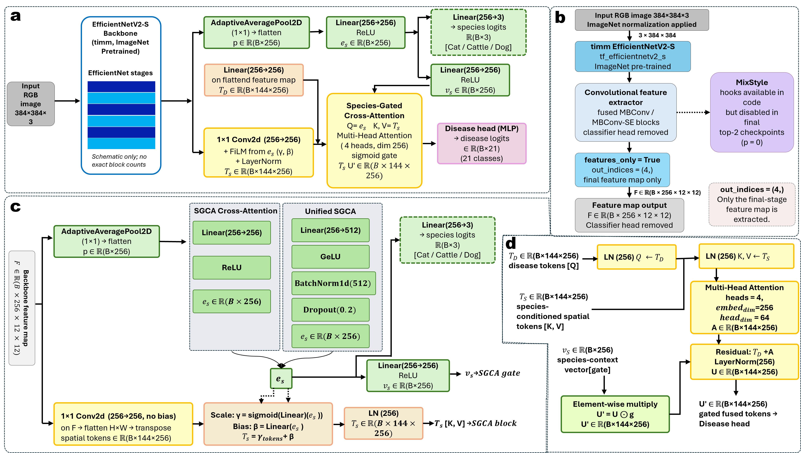
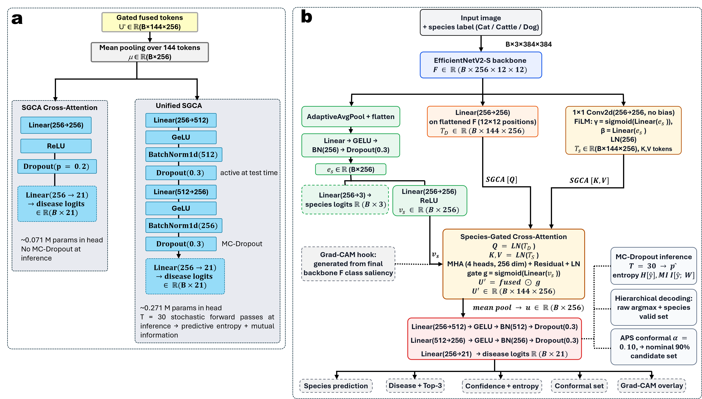
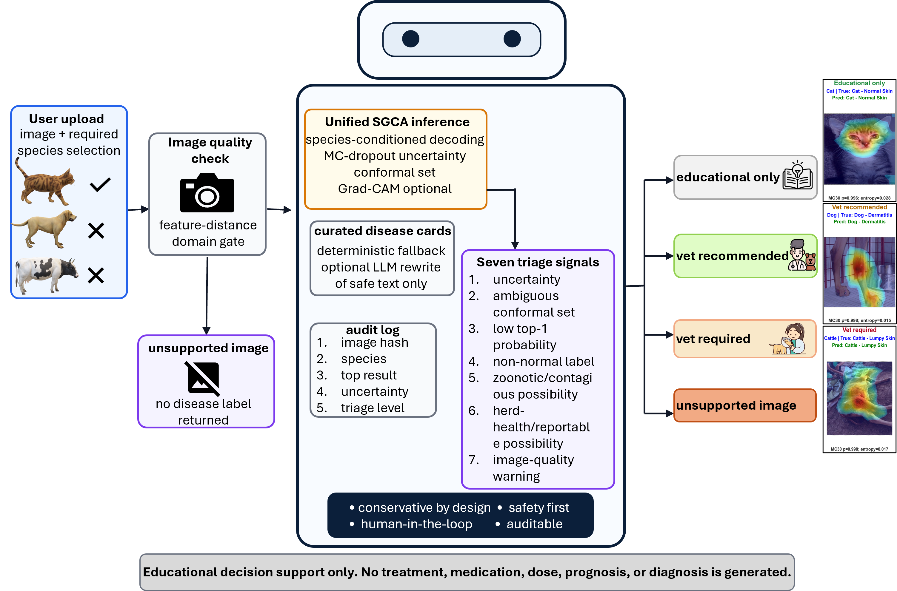

Species conditioning
FiLM modulation injects species context into spatial feature tokens.
Species-aware · uncertainty-aware
Species-Gated Cross-Attention combines hierarchical dermatology classification with MC-dropout uncertainty, conformal candidate sets, unsupported-image rejection, and conservative decision support.
System design
The model and agent separate visual prediction from conservative communication. Species context shapes the features and decoding space; uncertainty and domain checks decide whether an output should be shown or referred.
FiLM modulation injects species context into spatial feature tokens.
Disease tokens attend to species-conditioned image representations.
MC-dropout and APS conformal sets expose ambiguity rather than hiding it.
Quality, OOD, and referral signals gate educational decision support.
Release at a glance
The OOD result covers clearly unsupported general photographs; it does not establish safety for every near-OOD veterinary edge case.
Visual architecture
Species-conditioned feature modulation and cross-attention over spatial representations.

Hierarchical decoding and uncertainty-aware inference outputs.

Domain screening, calibrated triage signals, and bounded information delivery.

Scientific boundary
The system does not provide definitive diagnostic statements, drug names, dosages, treatment plans, or prognosis. Veterinary review remains necessary, particularly for uncertain, zoonotic, contagious, herd-health, or low-quality submissions.